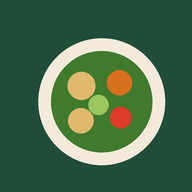

Coach
Mange bien. Reste calé. Perds du gras.
Des repas qui tiennent au corps, un objectif fait pour toi, et des progrès que tu vois.

Chili patate douce, haricots rouges, avocat
Aujourd'hui
Journal
Ajouter à la main
Entraînements
Récap
Scanner
Tes photos sont analysées par Claude. L'appli lui prépare un message avec tes objectifs et ce que tu as déjà mangé ; tu colles ensuite sa réponse ici.
Dans Claude : colle le message, ajoute ta photo, envoie. Tu peux continuer la même conversation toute la journée : recopie juste le message quand tu veux qu'il ait tes totaux à jour.
Progrès
Mensurations
Historique des pesées
Douleur
Choisis la zone. Chaque exercice a sa vidéo, faite le plus souvent par un kiné.
Journal de la douleur
Consulte un médecin ou un kiné si la douleur dure plus de 2 à 3 semaines, te réveille la nuit, ou s'accompagne de gonflement, chaleur, perte de force, engourdissement, ou d'un « clac » au moment de la blessure.
Sport
Avant la boxe ou la muscu : 10 mouvements guidés, 6 minutes, avec une attention aux poignets, coudes et épaules.
Après la séance : 6 étirements doux, 5 minutes.
Le minuteur bipe à la fin de chaque temps et garde l'écran allumé. Monte le son du téléphone.
Santé & forme
5 minutes de respiration guidée (5 s / 5 s) : baisse le stress, aide à s'endormir et à récupérer. Idéal le soir ou avant un repas.
Sommeil de la nuit dernière
Forme du jour
Hydratation
Suppléments
Ajouter un supplément
Habitudes du jour
Ces repères ne remplacent pas un avis médical. Si tu prends un traitement, demande à ton pharmacien ou ton médecin avant tout nouveau supplément.
Profil & objectifs
← RetourSauvegarde
Coller des données
Version du 22/11 · 23 h (nouveau look, semaine sportive et 23 sports, parcours GPS sur carte, photos des recettes). Si tu ne vois pas les dernières nouveautés : ferme complètement l'appli et rouvre-la.
Aliments : table Ciqual de l'Anses (licence ouverte). Codes-barres : Open Food Facts (ODbL), lecture avec html5-qrcode (Apache 2.0). Photos : Anna Pelzer, Svitlana, Ella Olsson, Julia, Vadim Matei et Vitaly Gariev, sur Unsplash (licence Unsplash, utilisation libre). Cartes : © OpenStreetMap (ODbL) et CARTO, affichées avec Leaflet (BSD-2).
Photographes des recettes (Unsplash)
Alex Bayev, Alisha Hieb, Andreas Rasmussen, Anh Nguyen, Annemarie Grudën, Anshu A, Artur Kornakov, Ati Nabaut, bady abbas, Bakd&Raw by Karolin Baitinger, Ben Kolde, Brooke Lark, Cala, Caleb Wright, Carlos Fernández, Christopher Alvarenga, Cisco Lin, Cliffer Rebelo, Cosmin Ursea, Daniel Brubaker, David Marquez, David Trinks, Deryn Macey, Diego Arenas de Rodrigo, Doug Bagg, Elena Leya, Ella Olsson, Emanuel Ekström, Esra Afşar, Fernando Andrade, Focused on You, Gabriel Yuji, Giorgio Trovato, HamZa NOUASRIA, Harry Dona, Homescreenify, HYEWON HWANG, Imad 786, Jana Ohajdova, Jason Leung, Jenn Kosar, Jonathan Borba, Jonathan Pielmayer, Jordon Kaplan, Joseph Gonzalez, Julian Rojas Dättwyler, Kaffee Meister, Karolina Kołodziejczak, Leanna Myers, Lena Sifoo, Louis Hansel, Maddi Bazzocco, Mads Eneqvist, Mark König, Markus Winkler, Max Griss, Monaz Hastam, Monika Grabkowska, Mourad HARKAT, Mustafa Bashari, Natalia Gusakova, Natalia Y., Nathan Dumlao, Nick Nice, nikldn, Pablo Arroyo, Rachel Loughman, Rafael Maggion, Riddhi K, Rimsha Noor, Roman Shalkevic, Sara Cervera, sera, sheri silver, Sumit Bhatia, Svitlana, Tania Melnyczuk, The Fry Family Food Co., Thembi Johnson, Towfiqu barbhuiya, VD Photography, Weronika Krztoń, william wallace, X F, Yimeng Zhao, Zoshua Colah.